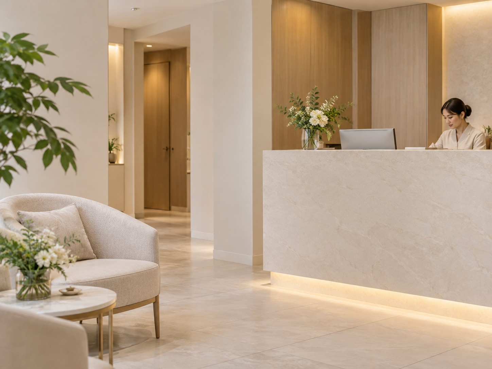
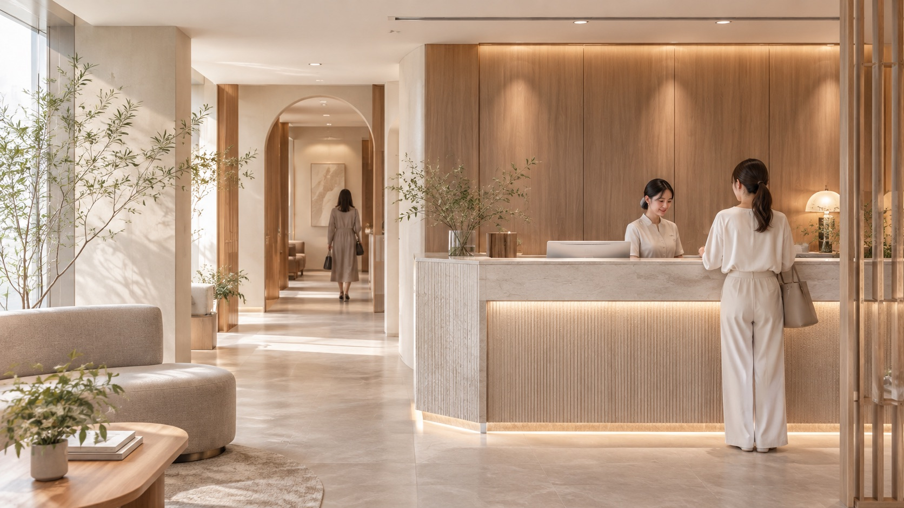
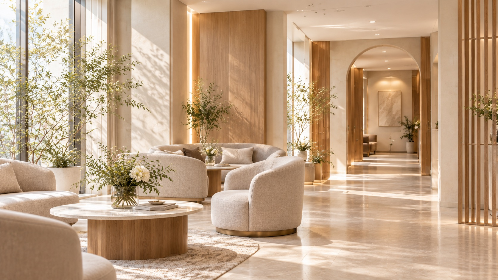
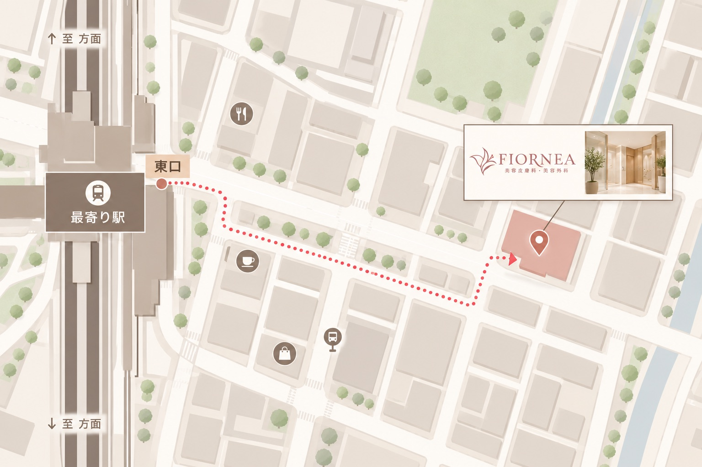

INFORMATION
AI顔診断シミュレーションのご案内
写真を使用せずに体験できる診断についてご紹介します。

ABOUT FIORNEA
フィオルネア美容皮膚科・美容外科は、丁寧な対話を大切にする美容クリニックです。お顔の印象やご希望を整理し、一人ひとりに合った選択肢をご案内します。
美容医療とAI分析の活用についても、分かりやすい説明と安心できる体験を第一に取り組んでいます。
FIRST VISIT
お悩みやご希望を伺うことから始めます。施術内容について十分にご理解いただけるよう、カウンセリングでは分かりやすいご案内を心がけています。
CLINIC GUIDE
DOCTOR
当院では、お一人おひとりのご希望やお悩みを丁寧に伺い、自然な変化を大切にした美容医療をご提案しています。
AIによる顔の特徴分析も参考にしながら、患者様ご自身のご希望を尊重した施術計画を検討します。
診断結果だけで施術を決定することはなく、医師による診察とカウンセリングを通じて、一人ひとりに適した方法をご案内します。
FAQ
お悩みやご希望を伺い、医師が現在の状態を確認したうえで、考えられる施術方法や注意点についてご説明します。
写真を使用しないシミュレーション診断は無料でお試しいただけます。表示される内容はイメージに基づく簡易的な結果です。
はい。シミュレーション診断では、顔写真をアップロードせずに複数の質問へ回答することで、顔タイプのイメージをご確認いただけます。
いいえ。AI顔診断はカウンセリングを補助する参考情報です。実際の施術内容は、医師による診察と患者様のご希望を踏まえて検討します。
ダウンタイムの程度や期間は施術内容や個人差によって異なります。詳しくは診察・カウンセリング時にご説明します。
いいえ。カウンセリング後に施術を受けるかどうかをご検討いただけます。十分に納得されたうえでご判断ください。

OUR CLINIC
アイボリーと木目を基調とした、落ち着きのある待合スペースです。ご来院からカウンセリングまで、安心して過ごせる環境づくりを大切にしています。
ACCESS
※掲載画像はゲーム内の架空の案内図です。実在する施設・住所・駅を示すものではありません。
